Candidate List 20260608 Previous Day Next Day Section 1: New Sources (age<1d) Cosmological Afterglow
Section 2: Old (1-5d) sources observed last night placeholder
Section 1: New Afterglow/FBOT Cands Last Night (3)
1. ZTF26abanack (Afterglow?) [Back to Top] [Share] [Trigger Swift] [Fritz ] [Lasair ]RA, Dec: 229.83199, -17.45046 15h19m19.68s, -17d-27m-1.66sGalactic (l, b): 345.97156, 32.79043 WARNING: 0.85 deg from ecliptic plane ext(g-r) = 0.14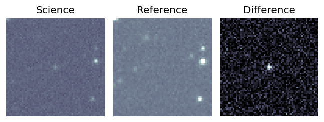
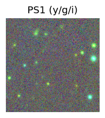
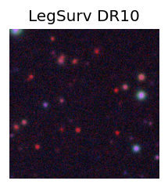
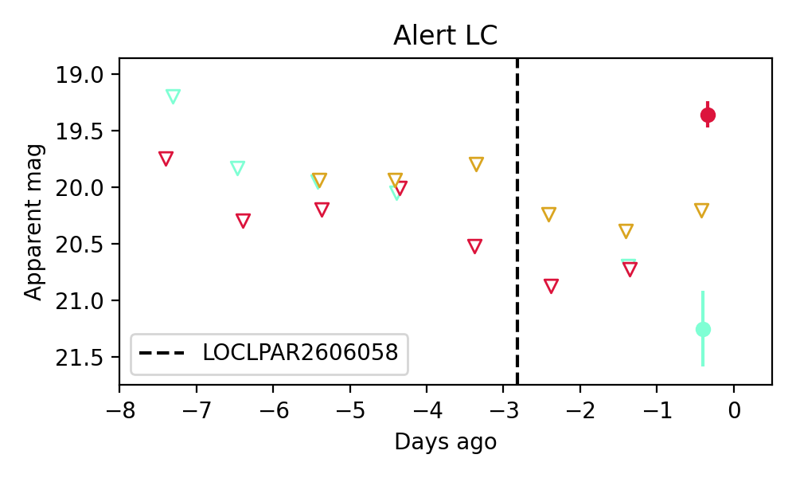
Consistent with synchrotron, g-r>0!
2. ZTF26abankfi (Afterglow?) [Back to Top] [Share] [Trigger Swift] [Fritz ] [Lasair ]RA, Dec: 266.93831, -14.29411 17h47m45.20s, -14d-17m-38.81sGalactic (l, b): 12.83558, 7.12279 ext(g-r) = 1.038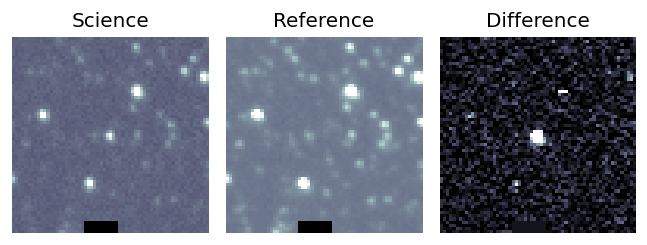
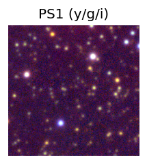
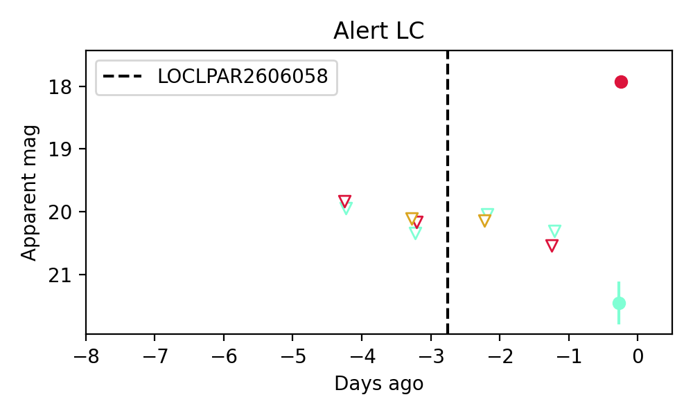
Consistent with synchrotron, g-r>0!
3. ZTF26abannfp (Afterglow?) [Back to Top] [Share] [Trigger Swift] [Fritz ] [Lasair ]RA, Dec: 244.61016, -15.49478 16h18m26.44s, -15d-29m-41.19sGalactic (l, b): 358.9664, 24.15058 ext(g-r) = 0.345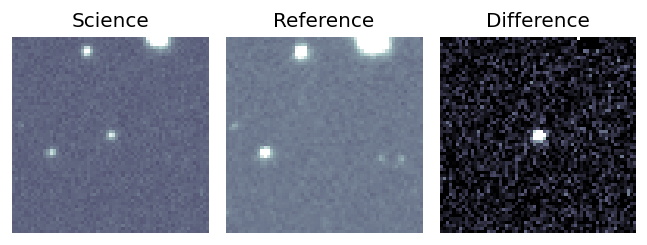
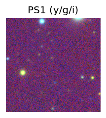
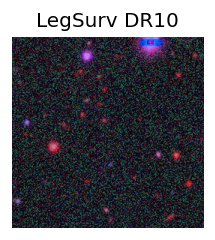
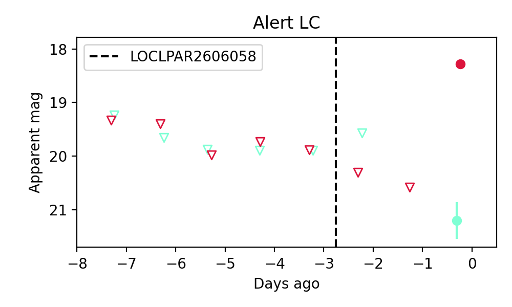
Consistent with synchrotron, g-r>0!
Section 2: Older Sources Observed Last Night (28)
0. ZTF26aazmvmk (Afterglow?) [Back to Top] [Share] [Trigger Swift] [Fritz ] [Lasair ]RA, Dec: 10.7247, 32.58232 0h42m53.93s, 32d34m56.36sGalactic (l, b): 120.8495, -30.2549 ext(g-r) = 0.084peak abs mag = -17.01
1. ZTF26aazpkda (Afterglow?) [Back to Top] [Share] [Trigger Swift] [Fritz ] [Lasair ]RA, Dec: 235.51013, 8.30986 15h42m2.43s, 8d18m35.50sGalactic (l, b): 16.0679, 45.52973 ext(g-r) = 0.047peak abs mag = -17.95
2. ZTF26aaztwcq (Afterglow?) [Back to Top] [Share] [Trigger Swift] [Fritz ] [Lasair ]RA, Dec: 239.32552, 11.28156 15h57m18.13s, 11d16m53.63sGalactic (l, b): 22.26617, 43.65936 ext(g-r) = 0.057peak abs mag = -17.79 peak abs mag = -18.17
3. ZTF26aazxowv (FBOT?) [Back to Top] [Share] [Trigger Swift] [Fritz ] [Lasair ]RA, Dec: 250.97368, 67.79103 16h43m53.68s, 67d47m27.72sGalactic (l, b): 99.28307, 36.85932 ext(g-r) = 0.035LegacySurvey: 1 sources in 3 arcsec Closest: d = 1.37 arcsec, 256.4 deg (east of north) photoz=0.2 (68% bounds 0.15, 0.27), type=EXP peak abs mag = -20.0 (68% bounds -19.38, -20.73) Consistent with synchrotron, g-r>0!
4. ZTF26aazzcps (Afterglow?) [Back to Top] [Share] [Trigger Swift] [Fritz ] [Lasair ]RA, Dec: 212.89597, -6.84099 14h11m35.03s, -6d-50m-27.56sGalactic (l, b): 335.5602, 50.88255 ext(g-r) = 0.031peak abs mag = -18.79 Consistent with synchrotron, g-r>0!
5. ZTF26abaarva (Afterglow?) [Back to Top] [Share] [Trigger Swift] [Fritz ] [Lasair ]RA, Dec: 278.37002, 7.51653 18h33m28.80s, 7d30m59.51sGalactic (l, b): 37.61909, 7.39529 ext(g-r) = 0.426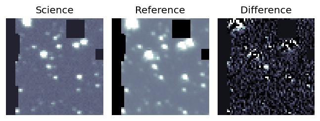
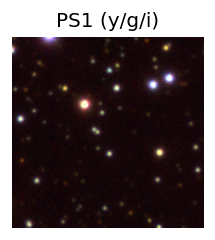
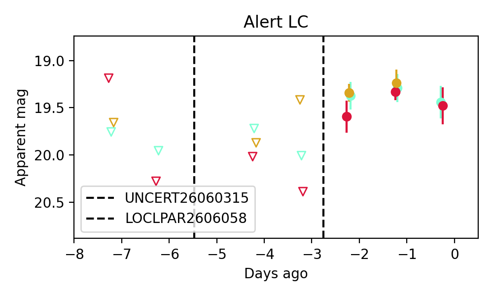
Consistent with synchrotron, g-r>0!
6. ZTF26abagkaa (FBOT?) [Back to Top] [Share] [Trigger Swift] [Fritz ] [Lasair ]RA, Dec: 259.76876, 56.36176 17h19m4.50s, 56d21m42.34sGalactic (l, b): 84.48777, 34.95839 ext(g-r) = 0.022peak abs mag = -20.90 LegacySurvey: 1 sources in 3 arcsec Closest: d = 0.68 arcsec, 9.9 deg (east of north) photoz=0.12 (68% bounds 0.09, 0.16), type=EXP peak abs mag = -18.77 (68% bounds -18.07, -19.4) Consistent with synchrotron, g-r>0!
7. ZTF26abaizzu (FBOT?) [Back to Top] [Share] [Trigger Swift] [Fritz ] [Lasair ]RA, Dec: 119.74971, 49.47772 7h58m59.93s, 49d28m39.80sGalactic (l, b): 169.40951, 30.97246 ext(g-r) = 0.043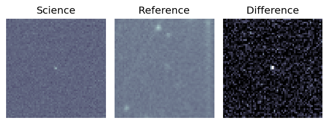
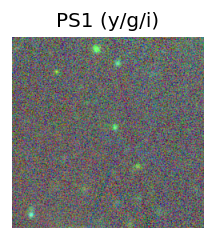
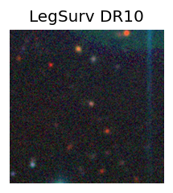
peak abs mag = -23.17 LegacySurvey: 1 sources in 3 arcsec Closest: d = 2.23 arcsec, 299.5 deg (east of north) photoz=0.62 (68% bounds 0.21, 0.77), type=PSF peak abs mag = -23.9 (68% bounds -21.21, -24.48) 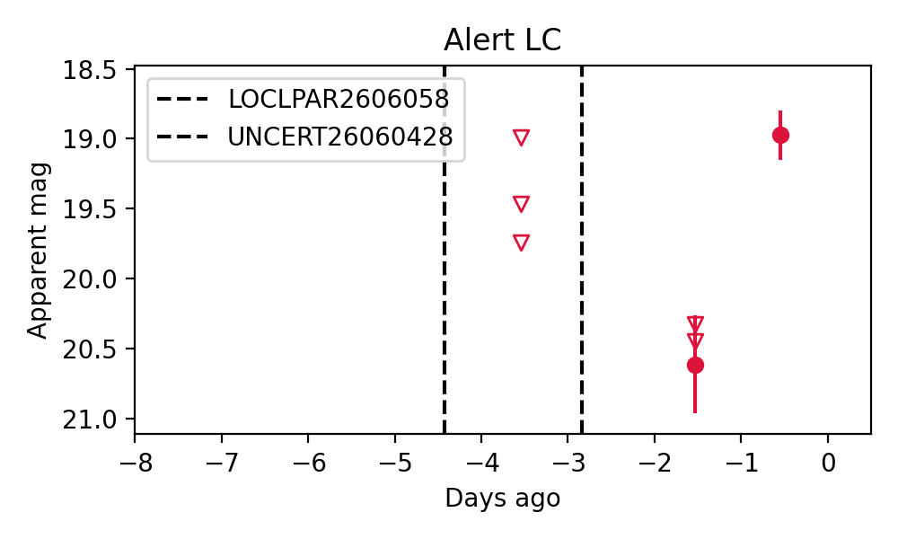
8. ZTF26abalayc (Afterglow?) [Back to Top] [Share] [Trigger Swift] [Fritz ] [Lasair ]RA, Dec: 210.46427, -18.47332 14h 1m51.42s, -18d-28m-23.96sGalactic (l, b): 325.38278, 41.30821 ext(g-r) = 0.086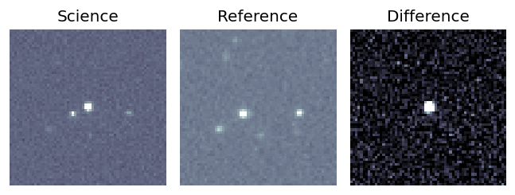
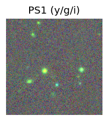
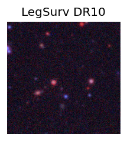
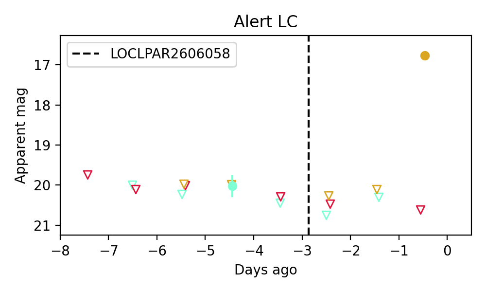
9. ZTF26abalcdf (Afterglow?) [Back to Top] [Share] [Trigger Swift] [Fritz ] [Lasair ]RA, Dec: 211.32138, -7.66032 14h 5m17.13s, -7d-39m-37.16sGalactic (l, b): 332.76432, 50.8838 WARNING: 4.74 deg from ecliptic plane ext(g-r) = 0.03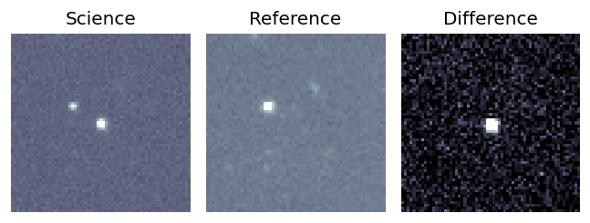
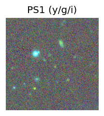
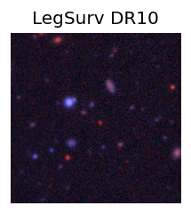
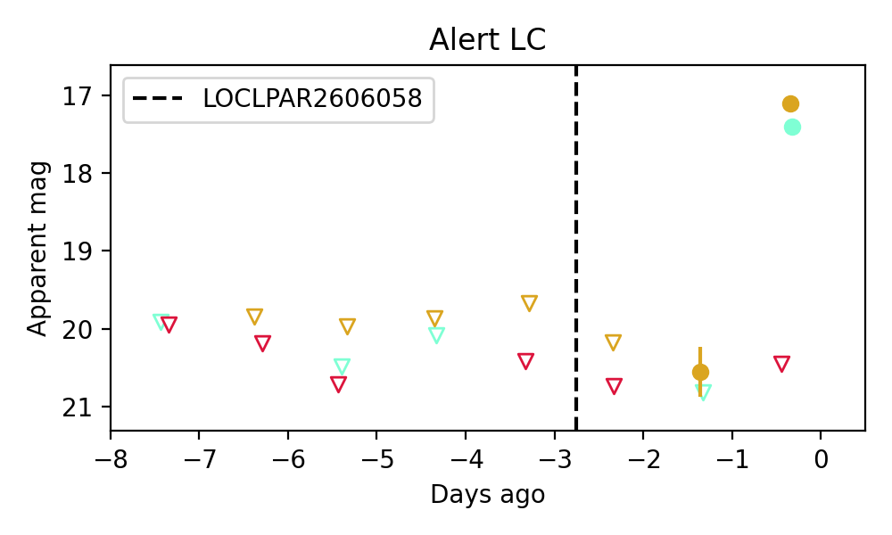
Consistent with synchrotron, g-r>0!
10. ZTF26abalsms (Afterglow?) [Back to Top] [Share] [Trigger Swift] [Fritz ] [Lasair ]RA, Dec: 233.41342, -15.75773 15h33m39.22s, -15d-45m-27.83sGalactic (l, b): 350.34482, 31.80051 WARNING: 3.34 deg from ecliptic plane ext(g-r) = 0.117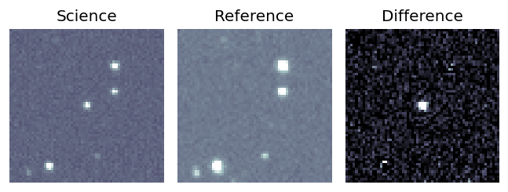
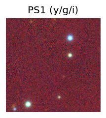
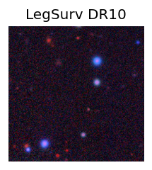
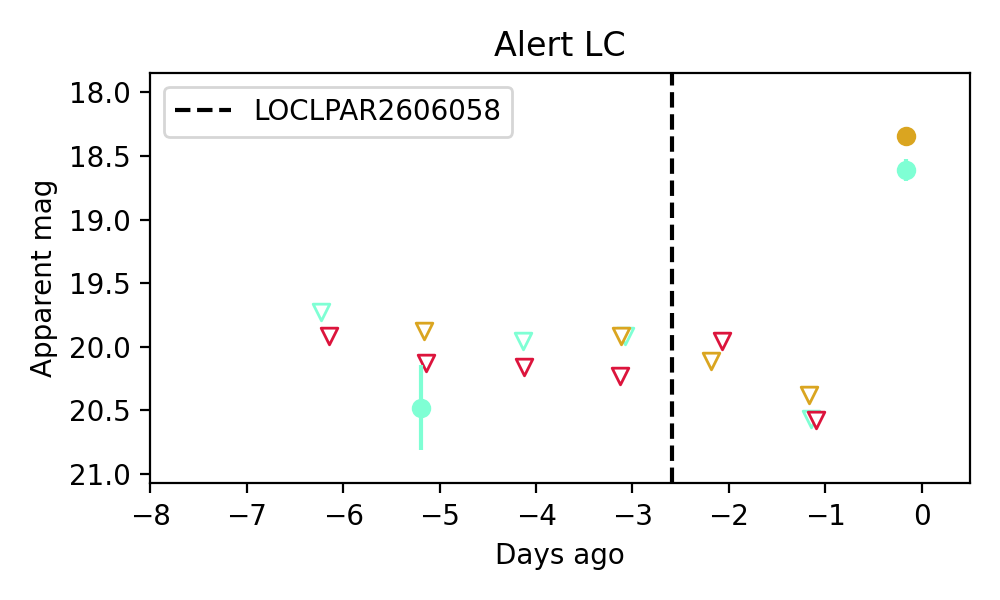
Consistent with synchrotron, g-r>0!
11. ZTF26abalsxj (Afterglow?) [Back to Top] [Share] [Trigger Swift] [Fritz ] [Lasair ]RA, Dec: 235.5863, -14.39586 15h42m20.71s, -14d-23m-45.10sGalactic (l, b): 353.22686, 31.32473 ext(g-r) = 0.156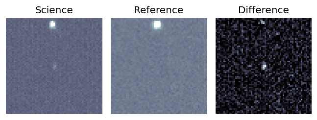
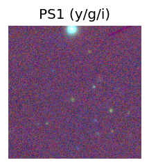
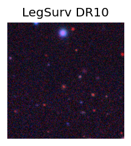
peak abs mag = -21.83 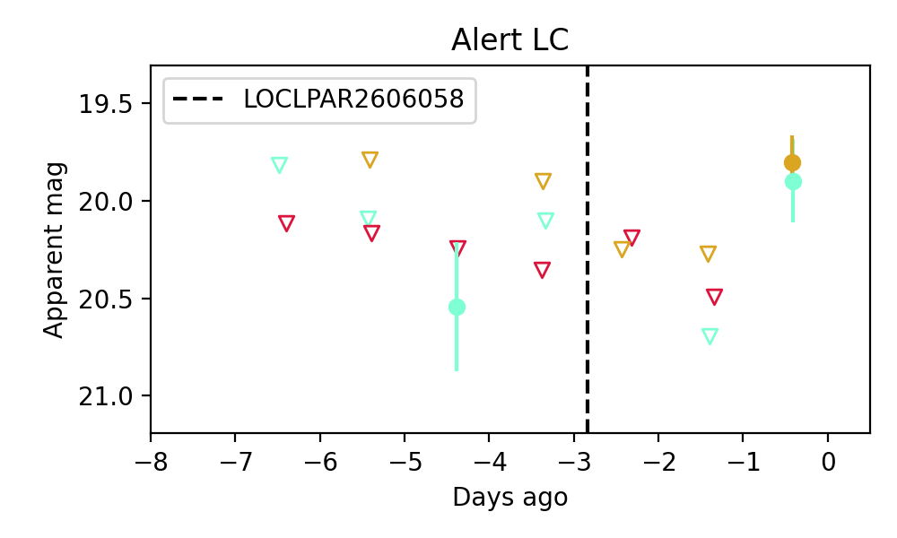
Consistent with synchrotron, g-r>0!
12. ZTF26abaltnv (Afterglow?) [Back to Top] [Share] [Trigger Swift] [Fritz ] [Lasair ]RA, Dec: 225.79439, -13.67049 15h 3m10.65s, -13d-40m-13.78sGalactic (l, b): 345.15237, 38.17243 WARNING: 3.45 deg from ecliptic plane ext(g-r) = 0.111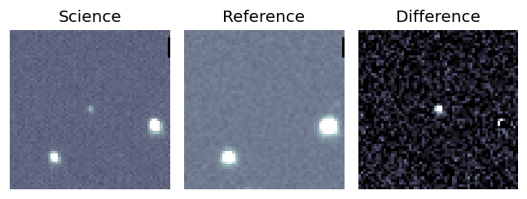
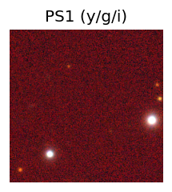
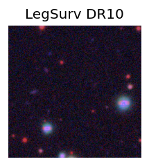
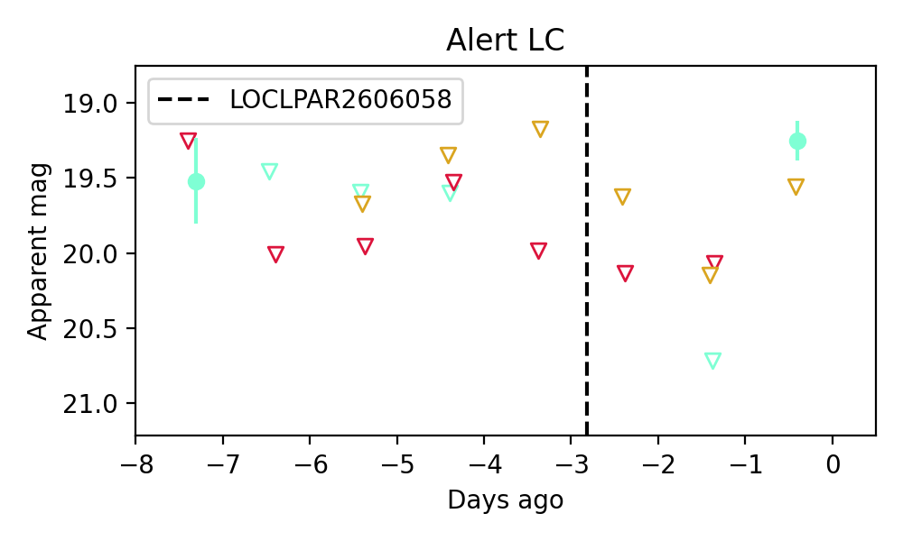
13. ZTF26abalume (Afterglow?) [Back to Top] [Share] [Trigger Swift] [Fritz ] [Lasair ]RA, Dec: 233.2216, -13.45889 15h32m53.18s, -13d-27m-32.01sGalactic (l, b): 352.05955, 33.59978 ext(g-r) = 0.139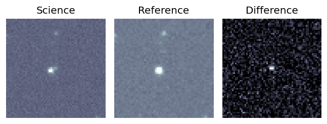
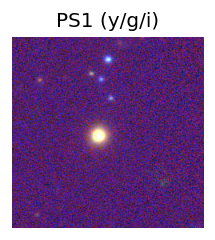
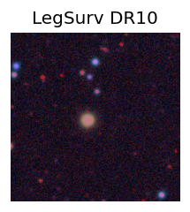
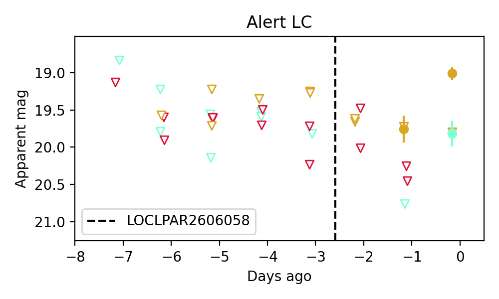
Consistent with synchrotron, g-r>0!
14. ZTF26abalvun (Afterglow?) [Back to Top] [Share] [Trigger Swift] [Fritz ] [Lasair ]RA, Dec: 226.31948, -11.95249 15h 5m16.67s, -11d-57m-8.98sGalactic (l, b): 347.03888, 39.19482 ext(g-r) = 0.108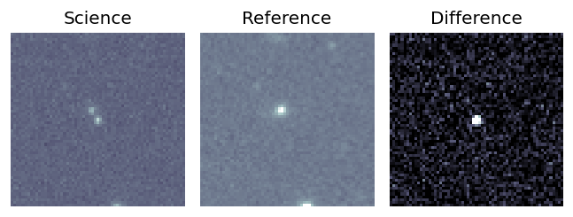
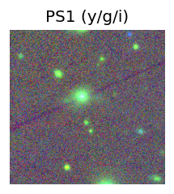
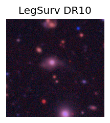
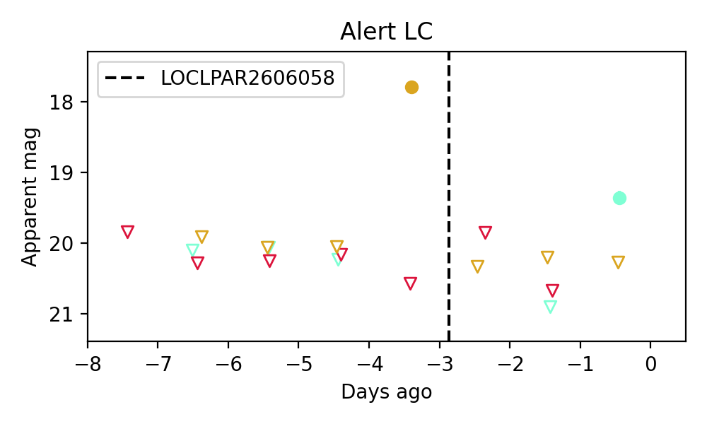
15. ZTF26abamdcg (FBOT?) [Back to Top] [Share] [Trigger Swift] [Fritz ] [Lasair ]RA, Dec: 200.49409, 5.82338 13h21m58.58s, 5d49m24.18sGalactic (l, b): 323.12764, 67.48985 ext(g-r) = 0.039peak abs mag = -24.08 Consistent with synchrotron, g-r>0!
16. ZTF26abamfqk (FBOT?) [Back to Top] [Share] [Trigger Swift] [Fritz ] [Lasair ]RA, Dec: 215.16164, 42.83089 14h20m38.79s, 42d49m51.21sGalactic (l, b): 79.66383, 66.04371 ext(g-r) = 0.011peak abs mag = -19.12 peak abs mag = -19.16 LegacySurvey: 1 sources in 3 arcsec Closest: d = 1.76 arcsec, 173.6 deg (east of north) photoz=0.36 (68% bounds 0.25, 0.59), type=REX peak abs mag = -21.48 (68% bounds -20.56, -22.81)
17. ZTF26abamhnb (Afterglow?) [Back to Top] [Share] [Trigger Swift] [Fritz ] [Lasair ]RA, Dec: 242.56673, -26.34437 16h10m16.01s, -26d-20m-39.72sGalactic (l, b): 348.97005, 18.26574 ext(g-r) = 0.268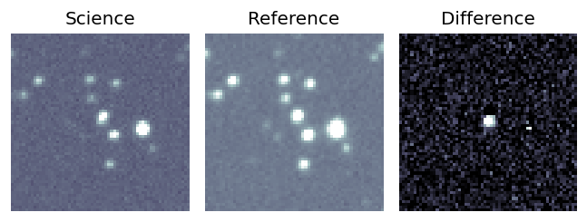
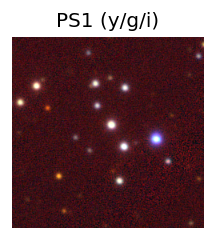
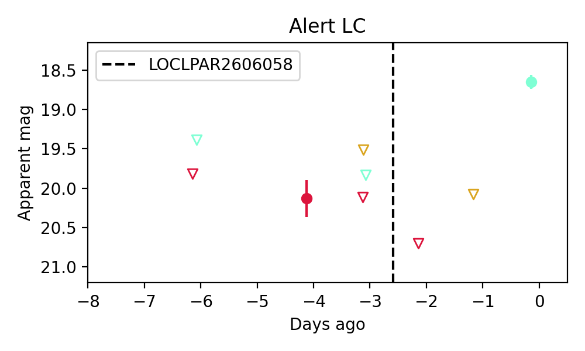
18. ZTF26abamnrt (Afterglow?) [Back to Top] [Share] [Trigger Swift] [Fritz ] [Lasair ]RA, Dec: 247.04328, 35.70161 16h28m10.39s, 35d42m5.79sGalactic (l, b): 57.61745, 43.55321 ext(g-r) = 0.017peak abs mag = -19.45 peak abs mag = -18.83 LegacySurvey: 1 sources in 3 arcsec Closest: d = 1.78 arcsec, 47.7 deg (east of north) photoz=0.13 (68% bounds 0.11, 0.15), type=SER peak abs mag = -19.02 (68% bounds -18.55, -19.42) Consistent with synchrotron, g-r>0!
19. ZTF26abampah (Afterglow?) [Back to Top] [Share] [Trigger Swift] [Fritz ] [Lasair ]RA, Dec: 200.75198, 79.96104 13h23m0.47s, 79d57m39.74sGalactic (l, b): 121.21302, 37.06162 ext(g-r) = 0.037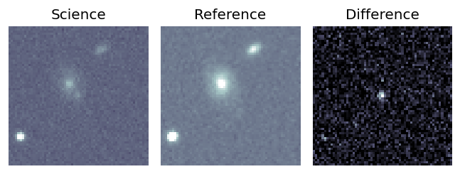
peak abs mag = -18.24 LegacySurvey: 1 sources in 3 arcsec Closest: d = 6.62 arcsec, 307.0 deg (east of north) photoz=0.15 (68% bounds 0.03, 0.53), type=PSF peak abs mag = -19.64 (68% bounds -16.06, -22.72) Consistent with synchrotron, g-r>0!
20. ZTF26abamsyo (FBOT?) [Back to Top] [Share] [Trigger Swift] [Fritz ] [Lasair ]RA, Dec: 271.74311, 40.84367 18h 6m58.35s, 40d50m37.21sGalactic (l, b): 67.71259, 25.34202 ext(g-r) = 0.044LegacySurvey: 1 sources in 3 arcsec Closest: d = 1.52 arcsec, 343.6 deg (east of north) photoz=0.14 (68% bounds 0.12, 0.16), type=SER peak abs mag = -19.48 (68% bounds -19.07, -19.75) Consistent with synchrotron, g-r>0!
21. ZTF26abamtdw (FBOT?) [Back to Top] [Share] [Trigger Swift] [Fritz ] [Lasair ]RA, Dec: 271.20629, 50.23451 18h 4m49.51s, 50d14m4.25sGalactic (l, b): 77.87381, 27.74177 ext(g-r) = 0.049LegacySurvey: 1 sources in 3 arcsec Closest: d = 1.71 arcsec, 1.0 deg (east of north) photoz=0.32 (68% bounds 0.25, 0.47), type=EXP peak abs mag = -21.19 (68% bounds -20.52, -22.16)
22. ZTF26abanctz (Afterglow?) [Back to Top] [Share] [Trigger Swift] [Fritz ] [Lasair ]RA, Dec: 270.88148, 67.57609 18h 3m31.56s, 67d34m33.94sGalactic (l, b): 97.55285, 29.46963 ext(g-r) = 0.051
23. ZTF26abanedy (FBOT?) [Back to Top] [Share] [Trigger Swift] [Fritz ] [Lasair ]RA, Dec: 269.98654, 43.66017 17h59m56.77s, 43d39m36.60sGalactic (l, b): 70.42002, 27.27406 ext(g-r) = 0.052peak abs mag = -24.05 LegacySurvey: 1 sources in 3 arcsec Closest: d = 0.44 arcsec, 227.7 deg (east of north) photoz=1.02 (68% bounds 0.85, 1.21), type=REX peak abs mag = -24.56 (68% bounds -24.07, -25.02)
24. ZTF26abangcy (Afterglow?) [Back to Top] [Share] [Trigger Swift] [Fritz ] [Lasair ]RA, Dec: 235.58003, -4.78187 15h42m19.21s, -4d-46m-54.74sGalactic (l, b): 1.81967, 37.84742 ext(g-r) = 0.186
25. ZTF26abanjcm (Afterglow?) [Back to Top] [Share] [Trigger Swift] [Fritz ] [Lasair ]RA, Dec: 255.06409, -15.2541 17h 0m15.38s, -15d-15m-14.77sGalactic (l, b): 5.6957, 16.28552 ext(g-r) = 0.652
26. ZTF26abanlyr (Afterglow?) [Back to Top] [Share] [Trigger Swift] [Fritz ] [Lasair ]RA, Dec: 244.07989, -20.10307 16h16m19.17s, -20d-6m-11.07sGalactic (l, b): 354.8281, 21.51446 WARNING: 1.18 deg from ecliptic plane ext(g-r) = 0.679
27. ZTF26abaotug (Afterglow?) [Back to Top] [Share] [Trigger Swift] [Fritz ] [Lasair ]RA, Dec: 284.37224, 3.44211 18h57m29.34s, 3d26m31.60sGalactic (l, b): 36.6847, 0.22485 ext(g-r) = 13.16